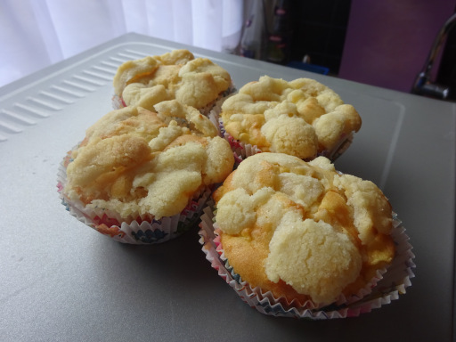

Apfel-Streusel-Muffins

- Zubereitung: ca. 25 Minuten
- Backen: ca. 25 Minuten
- Für 12 Stück
Zutaten
Teig
- 120 g Butter
- 90 g Zucker
- 1 Pck. Vanillezucker
- 2 Eier
- 250 g Mehl
- 1/2 Pck. Backpulver
- 120 ml Milch
- 500 g Äpfel
Streusel
- 75 g Mehl
- 75 g Zucker
- 50 g Butter
- 1 Pck. Vanillezucker
- 1/2 TL Zimt
Zubereitung
- Für den Rührteig Butter, Zucker und Vanillezucker verrühren, dann die Eier dazugeben und vermischen. Anschließend das Mehl, das Backpulver und die Milch hinzugeben.
- Die Äpfel schälen, in kleine Stücke schneiden und unter den Teig heben. Die Teigmasse in 12 Muffinförmchen (Papier) füllen.
- Für die Zubereitung der Streusel das Mehl mit Zucker, Vanillezucker, Butter und Zimt verkneten und auf den Teig geben. Im vorgeheizten Backofen bei 175°C (Umluft) ca. 20 - 25 min. backen.
Quelle: https://www.chefkoch.de/rezepte/1660031274094706/Leckere-Apfel-Streusel-Muffins.html